Project oriented workflows
Getting started
Licensing
This work is licensed under a Creative Commons Attribution-ShareAlike 4.0 International License (CC BY-SA4.0).
Checklist
R installed? Pretty recent?
Recommended R ≥ 4.3.0
RStudio installed?
I’m on 2023.06.1 Build 524
Packages?
install.packages(c("tidyverse", "rmarkdown", "usethis", "fs", "here"))
Resources
Book: https://rstats.wtf
What Did They Forget
to Teach You?
Learning objectives
Establish the concept of the project as the basic organizational unit of work.
Apply best practices in and leverage benefits of working in RStudio projects, including
Creating robust file paths that travel well in time and space.
Constructing human and machine readable file names that sort nicely.
Differentiating workflow elements, analysis inputs, and analysis outputs in project structure to create navigable programming interfaces.
Restarting R frequently, with a blank slate.
Be organized
Be organized as you go,
not “tomorrow”
Don’t fret over past mistakes.

Raise the bar for new work.

Be organized
self-explaining >>> wordy, needy explainers
Be organized
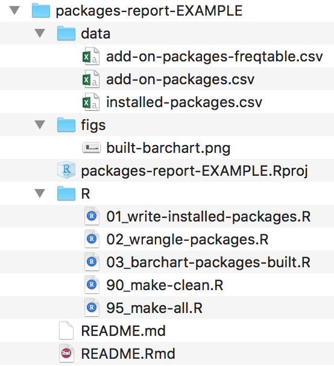
>>>
file salad
+ an out of date README
Good enough practices in scientific computing
PLOS Computational Biology
Wilson, Bryan, Cranston, Kitzes, Nederbragt, Teal (2017)
Practical Example
Your R installation
R packages
- the natural unit for distributing R code
base R
14 base + 15 recommended packages
ships with all binary distributions of R
For example, have you used lattice recently? 🤷
it came with your R installation, can use out of the box
library(lattice)
Additional packages
CRAN, ~20k packages
we’ll use wtfdbg later in Debugging
Where do packages live locally?
By default, in the default library
.Library
All libraries for the current session
.libPaths()
All installed packages
installed.packages()
Syntax aside: pipes
2014+ magrittr pipe
%>%2021+ (R \(\geq\) 4.1.0) native R pipe
|>
2022 Isabella Velásquez Understanding the native R pipe |> https://ivelasq.rbind.io/blog/understanding-the-r-pipe/
Syntax aside: namespacing
dplyr::select()
tells R explicitly to use the function
selectfrom the packagedplyrcan help to avoid name conflicts (e.g.,
MASS::select())does not require
library(dplyr)
🧐 Explore your R installation
install.packages("usethis")
library(usethis)
# saves project on desktop by default for most users
use_course("rstats-wtf/wtf-explore-libraries")
# use_course("rstats-wtf/wtf-explore-libraries", destdir = "my/new/location")
# can alternatively download from
# https://github.com/rstats-wtf/wtf-explore-librariesRead the README.md to get started.
01_explore-libraries_spartan.R
(directions to explore without suggested code)01_explore-libraries_comfy.R
(directions to explore with suggested code)01_explore-libraries_solution.R
(directions to explore with code solutions)
10:00
Project-oriented workflows
Adopt a project-oriented workflow
Why
work on more than 1 thing at a time
collaborate, communicate, distribute
start and stop
How
dedicated directory
RStudio Project
Git repo, probably syncing to a remote
If the top of your script is
Jenny will come into your your office and SET YOUR COMPUTER ON FIRE 🔥.
Project-oriented workflow designs this away. 🙌
Which persist after rm(list = ls())?
| Option | Persists? |
|---|---|
| A. library(dplyr) | |
| B. summary <- head | |
| C. options(stringsAsFactors = FALSE) | |
| D. Sys.setenv(LANGUAGE = “fr”) | |
| E. x <- 1:5 | |
| F. attach(iris) |
02:00
Which persist after rm(list = ls())?
| Option | Persists? |
|---|---|
| A. library(dplyr) | |
| B. summary <- head | |
| C. options(stringsAsFactors = FALSE) | |
| D. Sys.setenv(LANGUAGE = “fr”) | |
| E. x <- 1:5 | |
| F. attach(iris) |
What does it mean to be an RStudio Project?
RStudio leaves notes to itself in foo.Rproj
Open Project = dedicated instance of RStudio
dedicated R process
file browser pointed at Project directory
working directory set to Project directory
Many projects open
Use a “blank slate”
OR
Tools -> Global Options
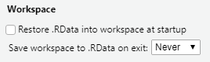Restart R often
Session -> Restart R
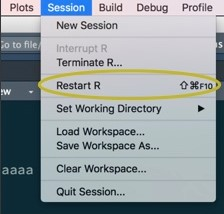
Windows
- Ctrl + Shift + F10
Mac
Cmd + Shift + 0
Cmd + Shift + F10
Project initiation: the local case
- New folder + make it an RStudio Project
usethis::create_project("~/i_am_new")File -> New Project -> New Directory -> New Project
- Make existing folder into an RStudio Project
usethis::create_project("~/i_exist")File -> New Project -> Existing Directory
Try option 2 now for wtf-explore-libraries.
02:00
Safe paths
On reproducibility of code
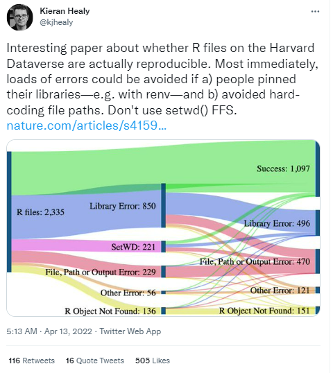
A large-scale study on research code quality and execution.
Trisovic, A., Lau, M.K., Pasquier, T. et al.
Sci Data 9, 60 (2022).
Do you know where
your files are?
Practice “safe paths”
relative to a stable base
use file system functions
not paste(), strsplit(), etc.
Packages with file system functions
fs = file path handling
Examples of a stable base
Project directory
Automatically complete paths with Tab.
Absolute paths
I have nothing against absolute paths.
Some of my best friends are absolute paths!
But don’t hard-wire them into your scripts.
Instead, form at runtime relative to a stable base
Practice safe paths

Use the
herepackage to build paths inside a project.Leave working directory at top-level at all times, during development.
Absolute paths are formed at runtime.
Artwork by @allison_horst.
here example
Works on my machine, works on yours!
Works even if working directory is in a sub-folder.
Works for RStudio Projects, Git repos, R packages, etc.
Works with knitr / rmarkdown.
here::here()
The here package is designed to work inside a project, where that could mean:
RStudio Project
Git repo
R package
Folder with a file named .here
here::here() does not create directories; that’s your job.
Kinds of paths
Absolute path.
Relative path to working directory, established by the RStudio Project.
Relative path within the RStudio Project directory.
Your turn
Practice calling here::here() in a project
to get a feel for it.
Read the README.md to get started.
10:00
What if my data can’t live in my project directory?
Are you sure it can’t?
Review the Good Enough Practices paper for tips.
Create a symbolic link to access the data. (fs::link_create(), fs::link_path())
Put the data in an R package.
Use pins.
Explore other data warehousing options.
RStudio Community threads:
Names matter
’Tis but thy name that is my enemy;
Thou art thyself, though not a Montague.
What’s Montague? It is nor hand, nor foot,
Nor arm, nor face, nor any other part
Belonging to a man. O, be some other name!
What’s in a name? That which we call a rose
By any other name would smell as sweet;
So Romeo would, were he not Romeo call’d,
Retain that dear perfection which he owes
Without that title. Romeo, doff thy name;
And for thy name, which is no part of thee,
Take all myself.
This
is
not
true
for
file
names.
From Danielle Navarro’s Project Structure slides
Names matter
machine readable
human readable
sort nicely
What features differentiate 😔 vs 😍?
😔
😍
myabstract.docx
Joe’s Filenames Use Spaces and Punctuation.xlsx
figure 1.png
homework1.R
JW7d^(2sl@deletethisandyourcareerisoverWx2*.txt
2018-01_bryan-abstract-rstudio-conf.docx
joes-filenames-are-getting-better.xlsx
fig01_scatterplot-talk-length-vs-interest.png
bryan_hw01.R
1986-01-28_raw-data-from-challenger-o-rings.txt
01:00
Names machines like
- don’t leave white space
- use letters, numbers, hyphens and underscores… that’s it
(characters like ^.*?+|$ can have a special meaning)
- be consistent with case
(some operating systems treat a and A the same, some differently).
- use separator characters wisely
use underscore _ to separate different chunks
use hyphen - for words in the same chunk
This creates names that are regular expression and globbing friendly, and easy to compute on! 🎉
Adapted from
https://djnavarro.net/slides-project-structure/#1.
Names humans like
name contains info on content
name anticipates context
concept of a slug 🐌 from user-friendly URLs
1986-01-28_
raw-data-from-challenger-o-rings.txtconcise, meaningful description
usually appended to the end
Names that sort nicely
put something numeric in there
left pad with zeros for constant width, nice sorting, 01
use the ISO 8601 standard for dates, YYYY-MM-DD
order = chronological or … consider common sense
ISO 8601
👍 file names
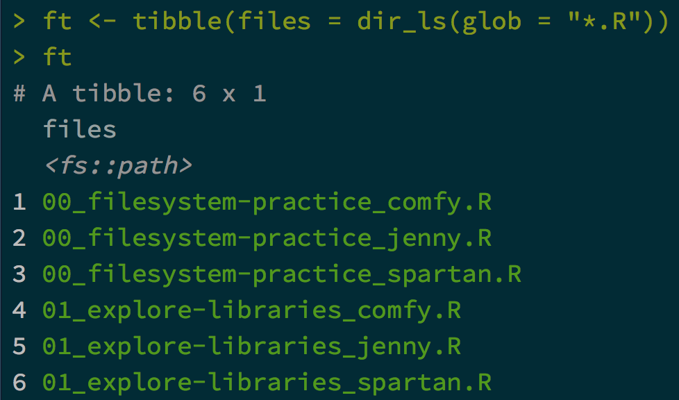Anyone can guess at file’s purpose
👍 file names
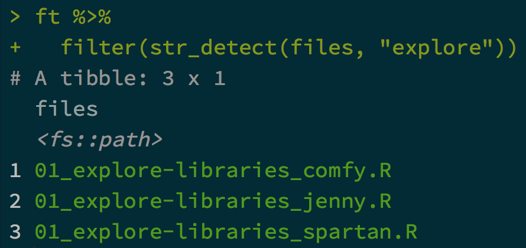Easy to filter in R (or the shell or whatever)
👍 file names
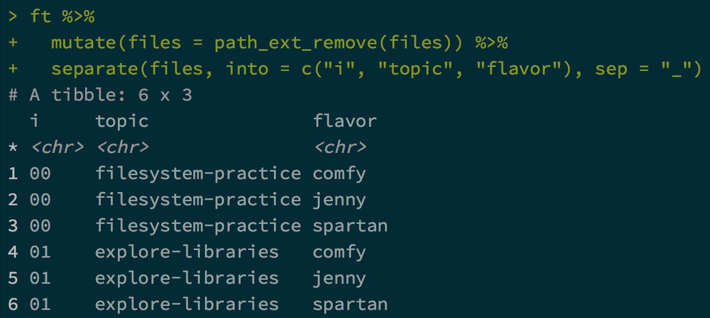Intentional delimiters means meta-data is easily recovered.
_ delimits fields; - delimits words
👍 file names
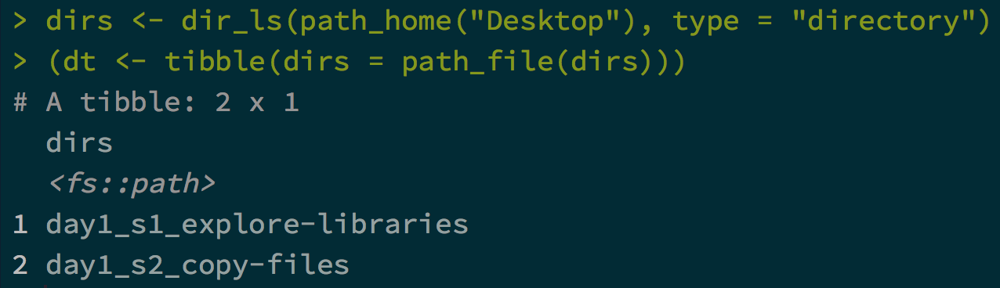Sorts in the same order as you
experience in real life.
Names matter
machine readable, human readable, and sort nicely
easy to implement NOW
payoffs accumulate as your skills evolve and
projects get more complex
Project structure
Break logic and output into pieces
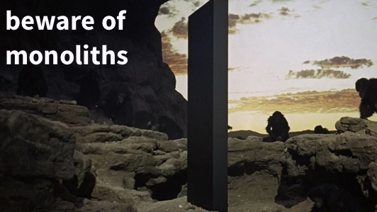Process
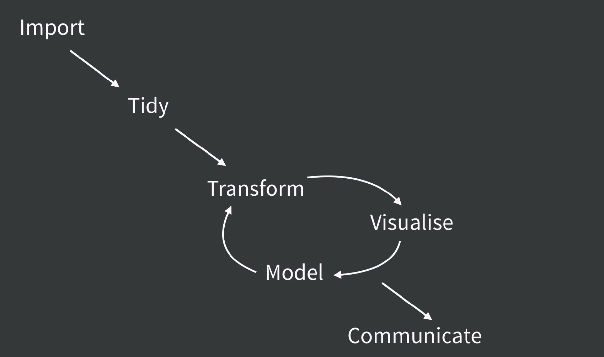Project code
smell.test.R
wrangle.R
model.R
make-figs.R
report.Rmd
>>>
everything.R
Process and code

Project artifacts
raw-data.xlsx
data.csv
fit.rds
ests.csv
>>>
.Rdata
Process and artifacts
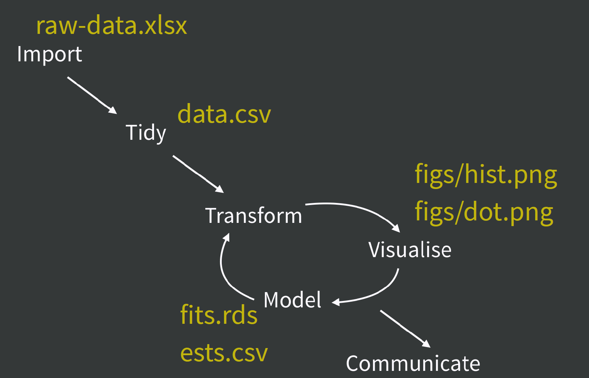A humane API for analysis
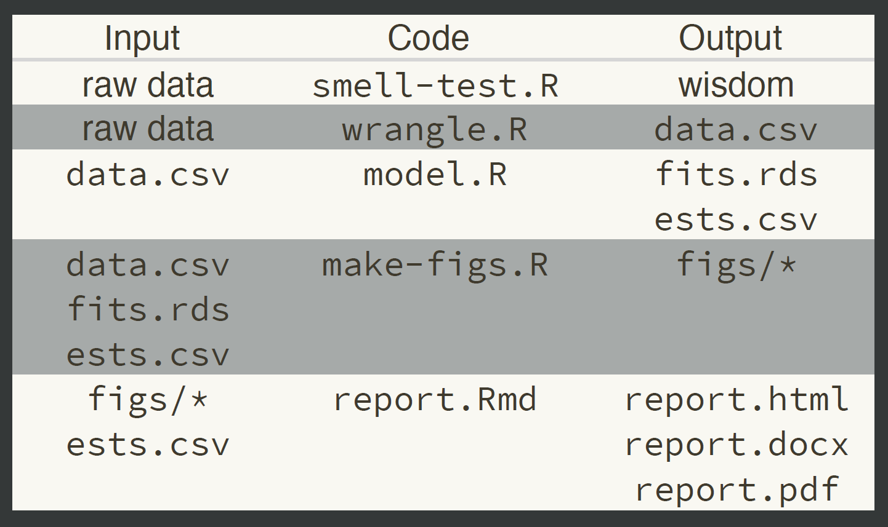Your turn
Create a report that adheres to project organization strategies.
Read the README.md to get started.
10:00